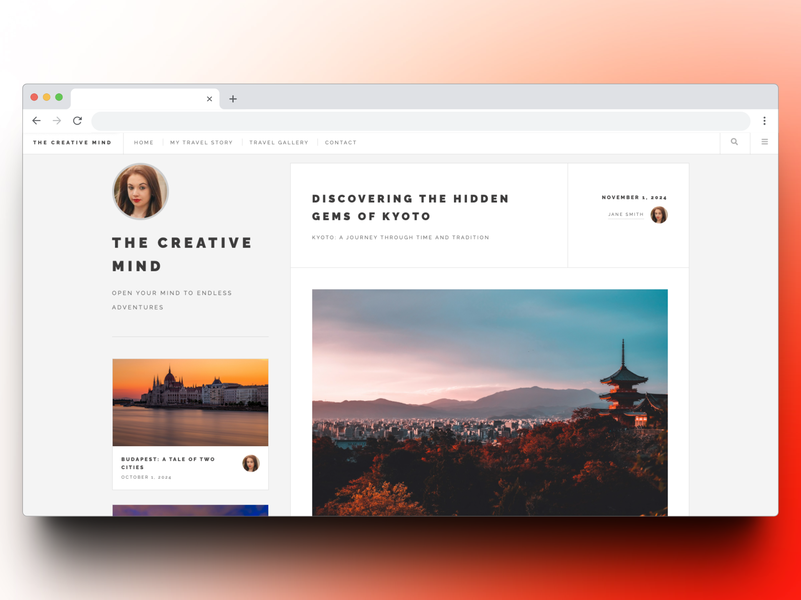

My Projects
A showcase of the work I've done as a front-end developer, turning ideas into clean, functional designs.
Below, you'll find a selection of projects that highlight my skills in creating responsive and user-friendly web applications. Each project is built with modern technologies and showcases my commitment to quality and creativity.
Recent Work
Building a Clean, Responsive Social Media Profile Card with HTML & CSS
Creating a polished social media user profile page can be both a design challenge and an opportunity to showcase your CSS skills. I recently recreated a profile design from scratch, using only HTML and CSS. .

Building a Clean, Responsive Travel Blog with HTML & CSS
Designing a responsive and visually appealing travel blog is a perfect way to demonstrate the power of clean HTML and CSS. I recently built a travel blog template that highlights best practices in layout design, responsiveness, and aesthetics.

Building a Clean, Responsive Wellness Retreat Website with HTML & CSS
Creating a clean and responsive wellness retreat website is a great way to showcase your HTML and CSS skills. I recently built a website that highlights best practices in layout design, responsiveness, and aesthetics.

{kind=link}
{kind=link}